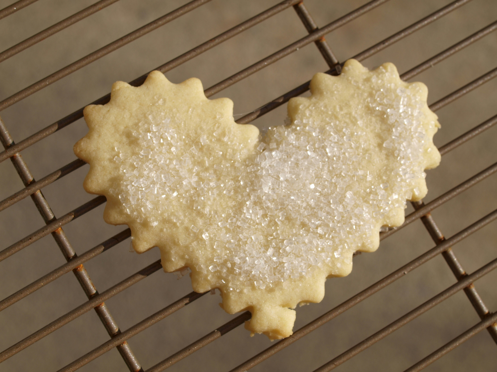

Sugar Cookies
Home

These sugar cookies are simple, sweet, and perfect for decorating. They have a crisp edge and a soft center, making them ideal for any occasion.
Ingredients:
- 2 3/4 cups all-purpose flour
- 1 teaspoon baking soda
- 1/2 teaspoon baking powder
- 1 cup unsalted butter, softened
- 1 1/2 cups granulated sugar
- 1 egg
- 1 teaspoon vanilla extract
- 3 tablespoons milk
Instructions:
- Preheat your oven to 350°F (175°C).
- In a large bowl, cream together the butter and granulated sugar until smooth.
- Beat in the egg and vanilla extract.
- In a separate bowl, combine the flour, baking soda, and baking powder. Gradually blend this into the creamed mixture.
- Stir in the milk.
- Drop by rounded spoonfuls onto ungreased cookie sheets.
- Bake for 10 to 12 minutes, or until edges are nicely browned.
- Allow cookies to cool on the baking sheet for a few minutes before transferring them to wire racks to cool completely.